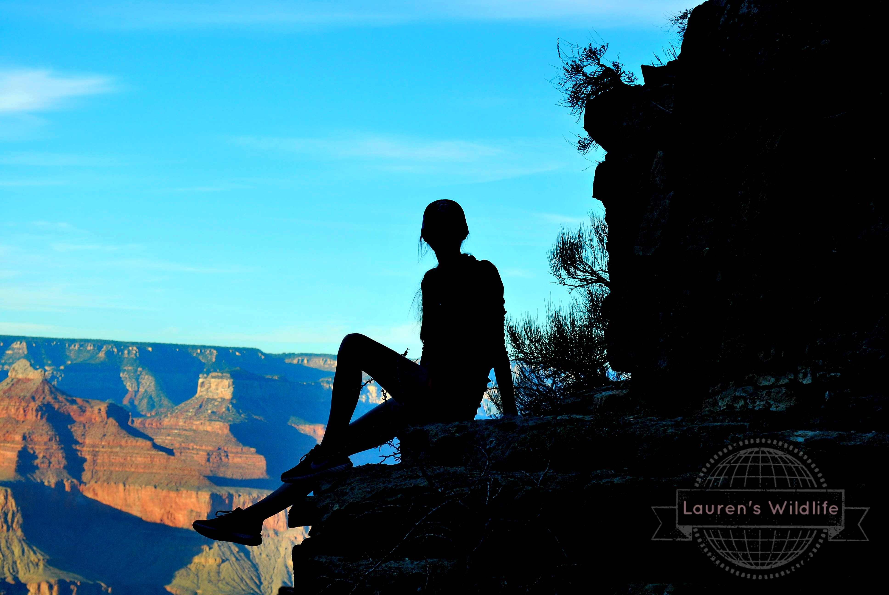
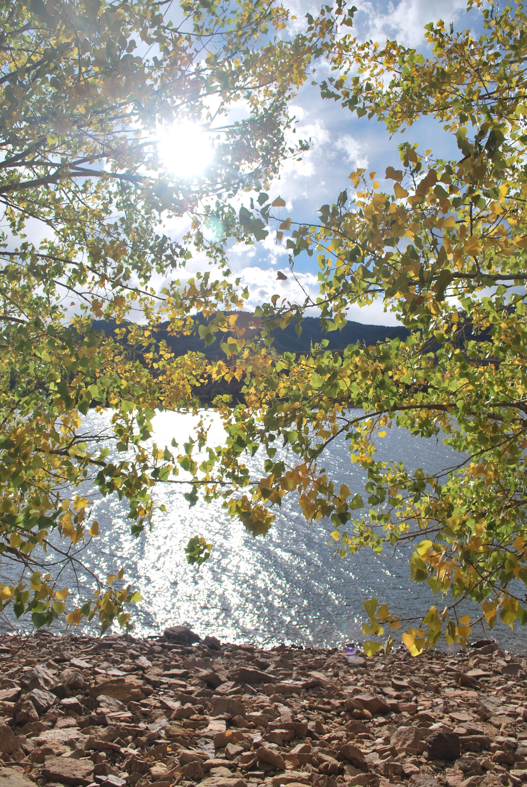
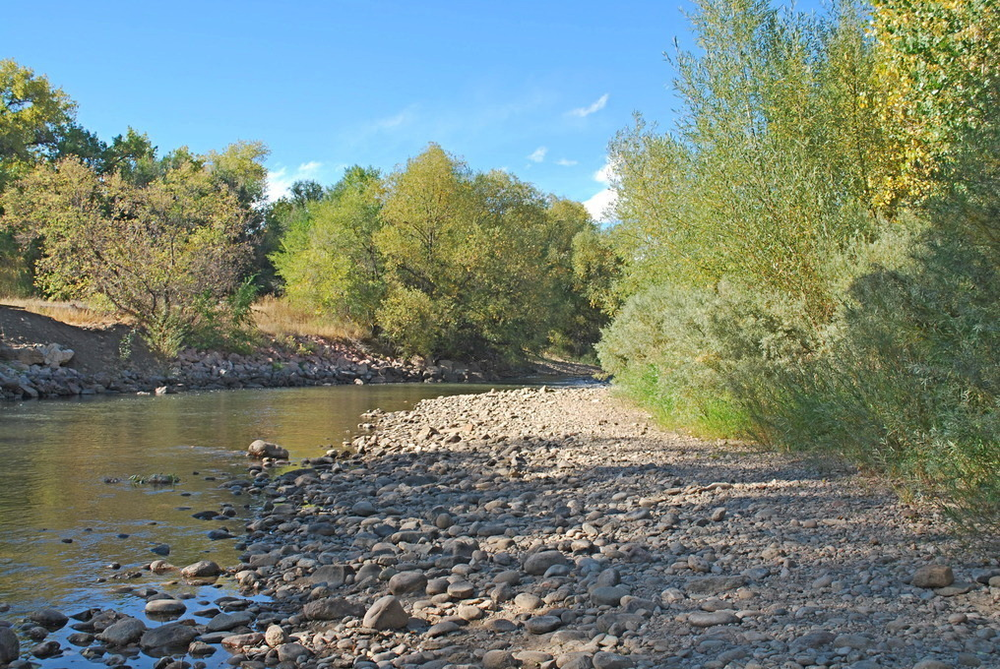
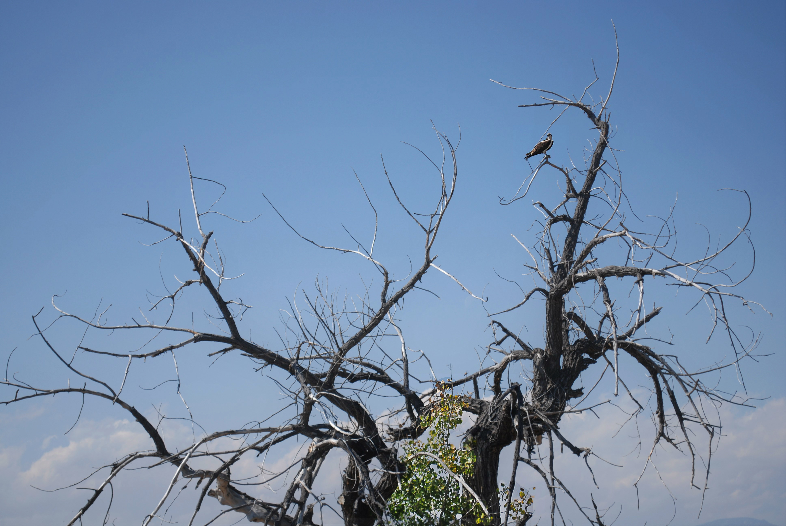
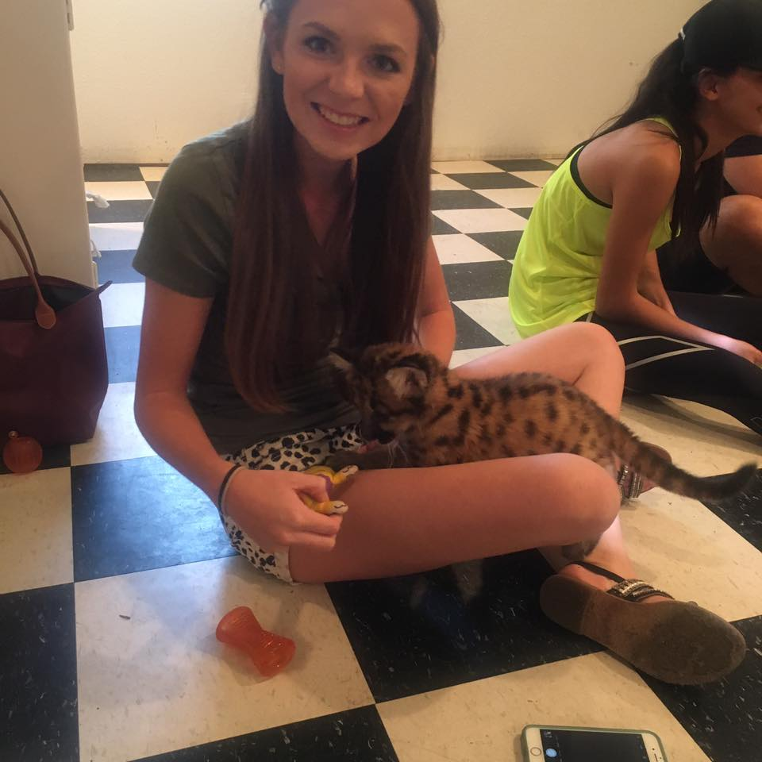
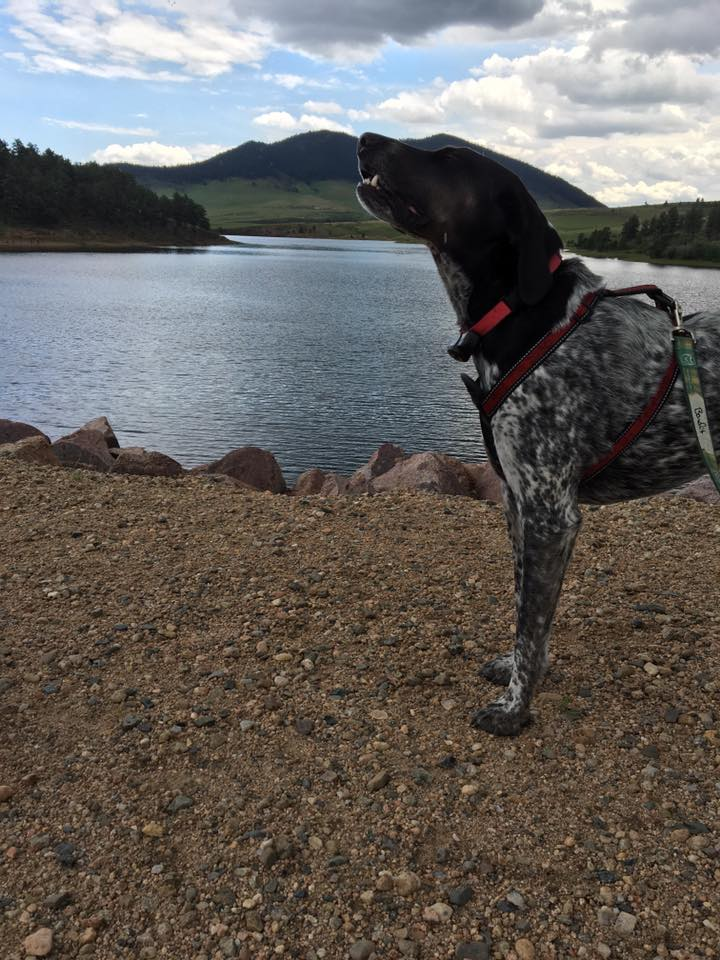
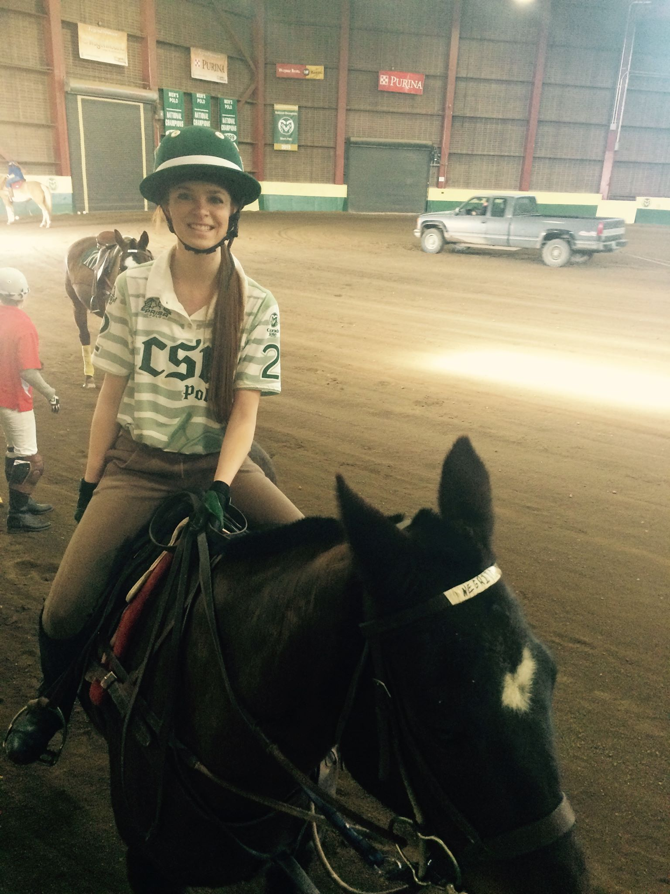
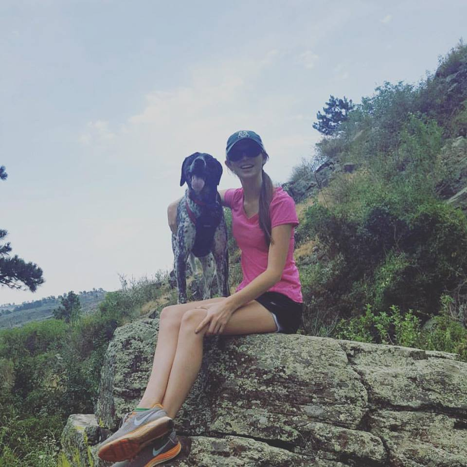

Welcome to Lauren's Wild Life, a collection of my adventures and photographs.
I am a wildlife biology student and passionate about animals and their habitats. This is a new website so keep checking back for updates of new articles, photographs and adventures!

Grand Canyon National Park was the hilight of my trip with EcoFlight, this photo was taken on the Bright Angel Trail.
I had the amazing opportunity to travel all around the four corners region of America for a week visiting
national parks with EcoFlight in their Flight Across America student program.
During the trip we flew over so many national monuments and parks I can hardly keep track.
Some of the parks we spent time in were Arches, Grand Canyon, and Mesa Verde National Parks.
More photos from my trip can be found on my Instagram!
To learn more about the student program or the organization click here for the Eco Flight website.
Development within and bordering our public lands is a large threat to many National Parks.
The Grand Canyon Escalade Project threatens the Grand Canyon and Colorado River, Specifically the Grand Canyon Confluence.
To learn more, click here for the Save the Confluence Website
,

No filter needed for this beautiful day at Horsetooth Reservoir.
Fall is my favorite time of year to visit, as the trees are absolutely electric.
While I was supposed to be fishing for crawfish during class, I only managed to catch a cold.

Northern Colorado is well known for the beautiful Poudre River and its network of trails.
It is a popular spot for college kids (like myself) to float down the river in inner tubes.
I snapped this while finding a spot to fish the river, I didn't see any trout but I did see bear tracks!

Osprey- also known as the Fish Eagle.
I found this guy hanging out near Lon Hagler Reservoir, his nest was nearby on a telephone pole.

I got the amazing opportunity to get to interact with and bottle feed this adorable 8 week old Moutain Lion Cub.
Serenity Springs Wildlife Center in Calhan, CO hosts these interaction events to help socialize their young animals that they have.

My dog Bandit, is a Blue Heeler/German Shorthaired Pointer mix and is almost three years old now!

I am on the CSU JV Polo team. This photo was taken during a weekend tournament againt the Denver Polo Club which included professional players
The pony I am on is the sweetheart Negrita. If you haven't seen polo played I highly suggest checking it out
Arena polo is a very exciting fast paced, high contact game of polo.

I love getting out to hike with Bandit every chance I get. Here we are on a hike in Lory State Park just north of Fort Collins, Colorado.